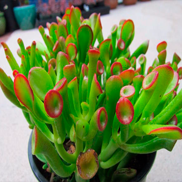

Ширина:
до 60 см
Высота:
до 45 см
Состав:
Растение в горшке

Крассула Овата Людоед
Комнатные растения2000 Р
Это разновидность нефритового растения или денежного дерева. Он назван в честь персонажа «Людоед» из-за своих больших, заостренных и скрученных листьев, напоминающих уши людоеда